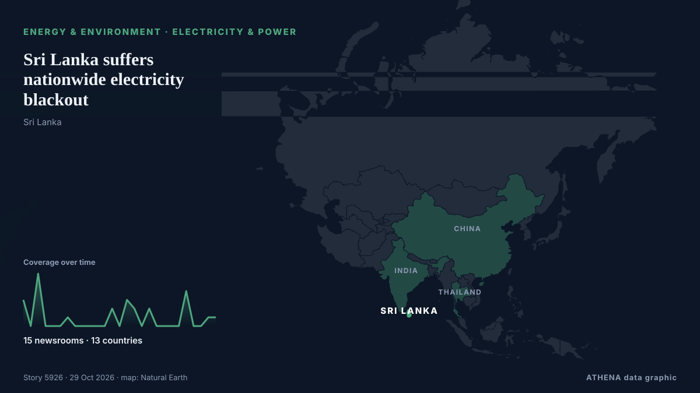

Sri Lanka suffers nationwide electricity blackout

Sri Lanka suffered a nationwide electricity blackout on Saturday after the national grid tripped, possibly because solar power generation exceeded consumption, officials said.The c... из Oman Observer
Независимые источники: 15 изданий в 13 странах, с 16 окт.; первым сообщил Times of India; освещение идёт на спад. ATHENA оценивает риск как повышенный (4.2/10), прежде всего из-за тяжести описываемого ущерба и географического и отраслевого охвата. Уверенность — 83 % (высокая); подтверждают независимые источники: 15 изданий, средняя надёжность источников — 74 %.
Почему это важно: События в энергетике и сырьевой сфере влияют на цены топлива и электроэнергии, надёжность поставок и климатические обязательства.
Что изменилось: 2 новых сообщений от 1 редакций за 24 часа до 29 окт..
Заголовки приводятся на английском языке, как они были опубликованы.
Коротко в цифрах
Отобрано, оценено и написано по опубликованной методологии ATHENA. Ни один редактор не вмешивается в отдельные события. Как это создаётся ›
| 16 Oct 04:34 UTC | 3 |
|---|---|
| 16 Oct 16:34 UTC | 0 |
| 17 Oct 04:34 UTC | 6 |
| 17 Oct 16:34 UTC | 0 |
| 18 Oct 04:34 UTC | 0 |
| 18 Oct 16:34 UTC | 0 |
| 19 Oct 04:34 UTC | 1 |
| 19 Oct 16:34 UTC | 0 |
| 20 Oct 04:34 UTC | 0 |
| 20 Oct 16:34 UTC | 0 |
| 21 Oct 04:34 UTC | 0 |
| 21 Oct 16:34 UTC | 0 |
| 22 Oct 04:34 UTC | 2 |
| 22 Oct 16:34 UTC | 0 |
| 23 Oct 04:34 UTC | 3 |
| 23 Oct 16:34 UTC | 2 |
| 24 Oct 04:34 UTC | 0 |
| 24 Oct 16:34 UTC | 2 |
| 25 Oct 04:34 UTC | 0 |
| 25 Oct 16:34 UTC | 0 |
| 26 Oct 04:34 UTC | 0 |
| 26 Oct 16:34 UTC | 0 |
| 27 Oct 04:34 UTC | 4 |
| 27 Oct 16:34 UTC | 0 |
| 28 Oct 04:34 UTC | 0 |
| 28 Oct 16:34 UTC | 1 |
| 29 Oct 04:34 UTC | 1 |
| 17 Oct 11:29 UTC | 3.6 |
|---|---|
| 17 Oct 11:30 UTC | 4.6 |
| 17 Oct 13:57 UTC | 3.9 |
| 23 Oct 09:33 UTC | 4.8 |
| 25 Oct 03:55 UTC | 5.1 |
| 29 Oct 11:28 UTC | 4.2 |
Откуда эти цифры
Значимость
Риск
Уверенность
Освещение — кто сообщил и когда
заголовок в оригинале · открывает источник- Times of India · Индия · IndiaIndian-made stents under scrutiny after complications in Sri Lanka
- The Hindu · Индия · IndiaVijay writes to Centre over arrest of fishermen by Sri Lanka
- AZERTAC (English) · Азербайджан · AzerbaijanAzerbaijan, Sri Lanka strengthen political dialogue
- Oman Observer · Оман · OmanSri Lanka suffers nationwide electricity blackout
- CNA (Channel NewsAsia) · Сингапур · SingaporeSri Lanka suffers nationwide electricity blackout
- Daily Mirror · Шри-Ланка · Sri LankaPower outage reported across Sri Lanka
- Business Recorder · Пакистан · PakistanSri Lanka suffers nationwide electricity blackout
- IOL · Южно-Африканская Республика · South AfricaSri Lanka’s 22 million people hit by six-hour blackout as grid shuts down
- Xinhua (English) — page reader · Китай · ChinaSri Lanka restores power transmission system after nationwide outage
- Daily Mirror · Шри-Ланка · Sri LankaSri Lanka’s first insulin manufacturing plant to begin production in 2027
- Daily Mirror · Шри-Ланка · Sri LankaSri Lanka CERT warns of critical PHP security vulnerabilities
- Xinhua (English) — page reader · Китай · ChinaSri Lanka maintains landslide alerts as prolonged rainfall threatens over 30,000 locations
- Daily Mirror · Шри-Ланка · Sri LankaComplaint lodged over Sri Lanka Police Facebook post
- DW English · Германия · GermanySri Lanka: Death of iconic elephant raises habitat concerns
- Mongabay · Соединенные Штаты · United StatesDeath of iconic elephant in Sri Lanka pushes authorities to fast-track protection efforts
- Taipei Times · Тайвань · TaiwanSri Lanka, S Africa win in stunners
- Xinhua (English) — page reader · Китай · ChinaSri Lanka to set up joint wildlife-military center to protect elephants
- Xinhua (English) — page reader · Китай · ChinaOver 500 kg drugs seized on Sri Lanka's southern coast
- OCCRP · Нидерланды · NetherlandsChinese Scam Boss Murdered in Sri Lanka Had Multiple Identities
- Daily Mirror · Шри-Ланка · Sri LankaSri Lanka ranks 53rd in 2026 Global Hunger Index
- Daily Mirror · Шри-Ланка · Sri LankaSri Lanka to host 19th World Trade Union Congress in May 2027
- Daily Mirror · Шри-Ланка · Sri LankaSri Lanka loses 40% of fish production to post-harvest waste
- Amnesty International · Великобритания · United KingdomSri Lanka: Outrageous organized crime bill granting authorities unchecked powers must be withdrawn
- Ada Derana · Шри-Ланка · Sri LankaSri Lanka Cricket likely to have new parliament-approved constitution by end of 2026
- Ada Derana · Шри-Ланка · Sri LankaSri Lanka and Thailand to strengthen cooperation in key sectors